서비스마다 '푸는 문제 하나'부터
첫 수업은 질문 하나로 시작해요. 'AWS의 핵심 서비스 분류는 뭘까요?' 수강생들이 답을 채워 가면서 정리된 목록은 컴퓨팅, 스토리지, 데이터베이스, 네트워킹, 보안이에요. 발표자는 슬라이드에서 빠뜨린 하나로 모니터링을 덧붙여요. 그래서 분류는 모두 여섯 개예요.
슬라이드는 분류마다 한 줄 설명을 붙여 놨어요. 컴퓨팅은 애플리케이션과 워크로드 실행, 스토리지는 데이터 저장과 조회, 네트워킹은 연결과 트래픽 관리예요.
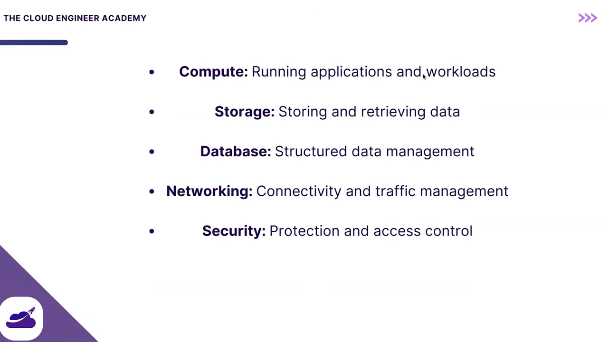
기능을 걷어 내고 '문제 하나'만 남기기
그다음부터는 서비스마다 '이 서비스가 푸는 가장 큰 문제가 뭔가요?'를 물어요. 수강생은 확장성, 가용성, 내구성 같은 말을 먼저 꺼내요. 발표자는 그걸 '유행어'라고 부르며 계속 되물어요. 그런 말은 클라우드라면 다 갖는 성질이지, 그 서비스만의 존재 이유가 아니라는 거예요.
S3에서 수강생이 '객체 스토리지'라고 답하자, 그건 저장 방식이라는 기능일 뿐이라고 해요. 원하는 답은 '무제한 저장'이었어요. 노트북은 저장 공간이 정해져 있지만 S3는 용량 계획 없이 원하는 만큼 넣을 수 있어요. 넣는 것도 노트북과 같아요. 사진, 영상, 문서, 백업 같은 거요.
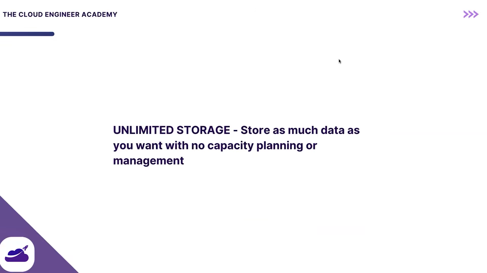
같은 방식으로 열 개 서비스를 정리했어요. 아래 그림은 여섯 분류 아래에 서비스를 놓고, 슬라이드와 발표자가 내린 한 줄 정의를 그대로 옮긴 거예요. 슬라이드에 답이 없던 IAM(Identity and Access Management), CloudWatch, CloudTrail은 발표자가 말로 정리한 답을 썼어요.
몇몇 서비스는 수강생이 답에 오래 걸렸어요. EC2에서는 '가상 머신'이 아니라 '서버'라는 쉬운 단어가 나와야 했어요. 서버를 몇 달이 아니라 몇 분, 실제로는 몇 초 만에 받는다는 게 핵심이에요. RDS(Amazon Relational Database Service)는 첫 글자를 A, D, A로 힌트를 준 끝에 '자동화된 데이터베이스 관리(Automated Database Administration)'가 나왔어요. 패치, 보안, 확장 같은 DB 관리의 골칫거리를 AWS가 맡는다는 뜻이에요.
Lambda는 수강생이 비용, 확장, 배포 속도를 차례로 말했지만 모두 '혜택'이라고 돌려보내요. EC2는 인스턴스 타입, 네트워크, 패치를 다 관리해야 해요. Lambda는 그런 인프라를 전혀 생각하지 않고 코드만 올려요. 그래서 답은 '관리할 서버가 없음'이에요.
CloudWatch와 CloudTrail은 헷갈리는 짝이라 따로 짚어요. CloudWatch는 서비스 수준에서 무슨 일이 일어나는지 한곳에서 '보고 이해하게' 해 줘요. CloudTrail은 'AWS 계정에서 누가 무엇을 했는지'를 기록해요. IAM이 '누가 무엇에 접근하나'를 통제한다면, CloudTrail은 그 결과로 일어난 행동을 남겨요.
DynamoDB를 고르지 않은 이유
DynamoDB의 답은 '무한한 데이터베이스 확장'이에요. RDS는 DB 크기를 미리 정하지만, DynamoDB는 들어오는 데이터에 맞춰 알아서 늘어나요. 여기서 발표자는 자기 회사 이야기를 해요. 새로 온 엔지니어가 테이블 설계를 신경 쓰지 않아도 되는 DynamoDB로 옮기자고 했지만 반대했다고 해요.
이유는 비용이에요. 이 서비스는 사용자가 퀴즈를 상한 없이 만들 수 있어요. 용량 상한 없이 무한히 늘어나면 비용도 무한히 늘 수 있고, 당시엔 그걸 막을 방법이 없다고 봤어요. 사업하는 입장에서 AWS 청구서가 크게 나오는 건 피하고 싶었던 거예요. RDS는 '1TB'처럼 크기를 정해 둘 수 있어요.
왜 이렇게까지 쉽게 말해야 할까요
수업 끝 무렵 발표자는 AWS 백서의 서비스 설명 한 대목을 열어 읽어요. 'Amazon CloudWatch는 개발자 시스템을 위한 모니터링·관리 서비스'로 시작하는 문장을 읽다가, 기술 배경이 없는 사람에게는 무슨 말인지 알 수 없다고 해요.
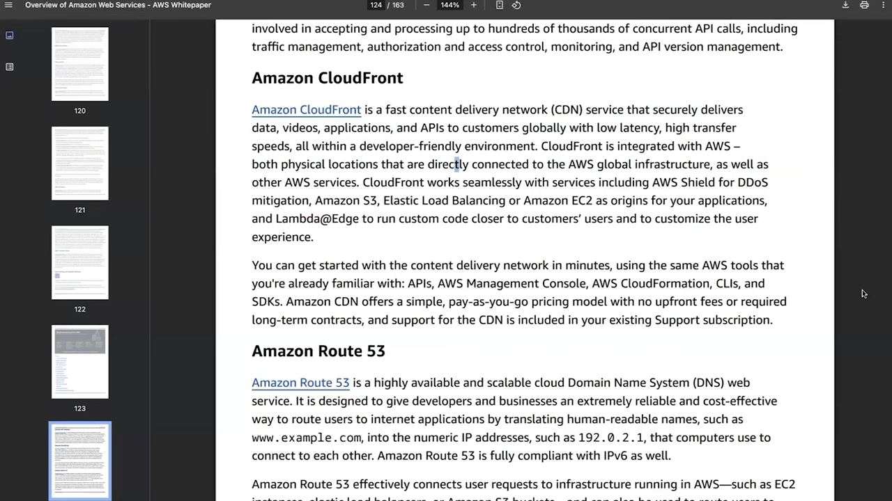
이 습관은 시험에도 쓸모가 있어요. CloudTrail과 CloudWatch 중 하나를 고르는 문제라면 한 줄 정의만으로 바로 답이 나와요. 더 크게는 경영진이나 투자자, 비기술 고객과 대화할 때 쓰여요. 그들은 확장성이나 가용성에 관심이 없어요. 'CloudFront를 쓰면 고객이 세계 어디서든 콘텐츠를 빨리 본다'처럼 사용자가 무엇을 얻는지로 말해야 해요.
Every service that's created on AWS, the whole 200 plus has been built to solve a specific problem.
AWS의 200개 넘는 서비스는 모두 특정한 문제 하나를 풀려고 만들어졌어요.
— 영상 00:56:57
그래서 마지막 숙제는 서비스 100개를 골라 지금 한 것처럼 '이 서비스가 가능하게 해 주는 핵심 하나'를 적어 보는 거예요. 더 쪼갤 수 없을 때까지 '그게 정확히 뭔데?'를 반복하라고 해요.
트래픽 순서로 짜는 아키텍처와 무중단 이전
두 번째 수업은 발표자가 화이트보드 앞에 서서 진행해요. 화면 속 화이트보드가 작아서 글씨를 읽을 수 없어요. 그래서 이 섹션의 그림은 발표자가 말로 짚은 구성과 순서를 옮겨 그렸어요.
네 칸짜리 기본 흐름
먼저 칸 네 개를 그려요. 인터넷, 프런트엔드, 서버, 데이터베이스예요. 고객은 왼쪽에서 들어와요. 발표자는 인터넷이 주는 게 결국 '트래픽', 즉 사용자라고 해요. 그래서 설계는 늘 인터넷에서 시작해요. 프런트엔드는 사용자가 보는 화면이고, 서버는 그 화면 뒤의 업무 로직을 돌려요. 회사에 따라 서버와 DB를 묶어 '백엔드'라고 부르기도 해요.
AWS로 옮기면: 놓는 순서가 핵심이에요
다음 그림은 같은 흐름을 AWS 부품으로 옮긴 거예요. VPC 안에 가용 영역이 둘 있고, 영역마다 퍼블릭 서브넷 하나와 프라이빗 서브넷 둘이 있어요. 부품은 인터넷 게이트웨이, 로드 밸런서, EC2, RDS, NAT(Network Address Translation) 게이트웨이예요. 발표자는 '무엇을 먼저 놓을까요?'를 계속 물어요.
수강생들은 EC2나 RDS, NAT 게이트웨이를 먼저 꼽았어요. 발표자의 답은 네트워크 기반이 먼저라는 거예요. VPC와 서브넷, 인터넷 게이트웨이가 갖춰져야 트래픽이 흐를 길이 생겨요. 이 순서를 지키면 나중에 장애가 나도 '네트워크는 정상이니 서비스 쪽 문제'라고 빨리 좁힐 수 있어요.
- 가용 영역을 왜 둘 두나요? 하나가 내려가도 다른 하나가 서비스를 살려 두려고요. 발표자는 AWS가 셋을 권하지만 보통 둘이면 충분하다고 해요. 가능성이 낮아도 늘 '실패를 전제로 설계'해야 한다고 덧붙여요.
- 서브넷에 돈이 드나요? 발표자가 아는 한 서브넷 자체는 IP(Internet Protocol) 주소 범위일 뿐이라 비용이 없어요. 돈은 그 안에 넣는 리소스에서 나와요. 다만 서브넷을 50개씩 만들면 설계가 엉망이 된다고 해요.
- 로드 밸런서는 왜 NAT보다 먼저인가요? 인터넷 게이트웨이로 트래픽이 들어오면 그걸 서버들에 나눠 줄 장치가 바로 필요해서예요. NAT 게이트웨이는 아직 트래픽이 거기까지 오지도 않았는데 놓는 셈이라 순서상 맞지 않아요.
수업 중 S3는 왜 서브넷 안에 두지 않느냐는 이야기도 나와요. 발표자는 S3가 글로벌 서비스라서 서브넷과 가용 영역 바깥, AWS 전체 네트워크에 있다고 설명해요.
NAT 게이트웨이와 보안 그룹
발표자는 NAT 게이트웨이를 '프라이빗 서브넷의 서버가 인터넷에 직접 노출되지 않고 바깥과 통신하게 하는 장치'로 설명해요. 라우팅만 열면 프라이빗 서버가 인터넷에 바로 나갈 수도 있어요. 하지만 그러면 업무 로직이 든 서버가 노출되니 NAT를 둔다는 거예요. 그리고 서버가 바깥과 통신할 필요가 없다면 NAT 자체를 넣지 않아도 돼요.
다만 수업에서는 '사용자에게 돌아가는 응답이 로드 밸런서가 아니라 NAT 게이트웨이를 거쳐 나간다'고 설명하는 대목이 있어요. 이 부분은 AWS 문서와 달라요.
보안 계층은 두 겹이에요. NACL(Network Access Control List)은 서브넷을 둘러싸고, 보안 그룹은 서브넷 안의 리소스를 둘러싸요. 발표자는 현업에서 NACL을 쓰는 회사는 드물고 보안 그룹이 훨씬 흔하다고 해요. 설정이 복잡하고, 라우팅 테이블로도 서브넷 출입을 막을 수 있어서예요.
멈추지 않고 새 계정으로 옮기기
후반 연습 문제예요. 한 스타트업이 콘솔로 클릭해서 만든 환경(EC2, RDS, NAT)을 새 AWS 계정의 IaC 환경으로 옮겨야 해요. 사용자가 있으니 서비스를 멈추면 안 돼요. 그리고 회사는 한 번에 갈아엎고 잘되길 비는 '빅뱅' 방식을 원하지 않아요. 단계마다 확인하며 가고 싶어 해요.
수강생들이 여러 답을 낸 끝에 나온 순서는 아래와 같아요. 핵심은 (b)예요. 새 EC2를 옛 환경의 RDS에 먼저 붙여서 '새 서버가 옛 DB와 통신할 수 있다'를 증명해요. 그게 확인돼야 옛 서버를 걷어낼 수 있어요.
- 새 환경에 EC2를 먼저 만들어요 — 기존 EC2의 이미지를 떠서 새 계정에 올려요. 트래픽은 아직 전부 옛 환경으로 가요.
- 새 EC2를 옛 RDS에 연결해요 — 두 VPC는 서로 격리돼 있으니 VPC 피어링이나 Transit Gateway로 잇고, 라우팅 테이블과 RDS 보안 그룹을 열어요. 발표자는 이 연결이 AWS 내부 네트워크로 가서 인터넷에 노출되지 않는다고 해요. 새 서버에서 옛 DB의 IP로 접속이 되면 통과예요
- Route 53으로 트래픽을 조금씩 넘겨요 — Route 53의 가중치 기반 라우팅으로 처음엔 10%만 새 로드 밸런서로 보내고 20, 30, 40, 50%로 늘려요. 주말처럼 요청이 몰릴 때도 버티는지 봐요. 그동안 옛 EC2는 끄지 않고 대기시켜요.
- 마지막에 DB를 옮겨요 — 발표자는 AWS DMS(AWS Database Migration Service) 같은 서비스를 쓰면 된다고 해요. 옛 데이터는 보존 정책에 따라 백업으로 일정 기간 남겨요.
두 환경을 동시에 돌리는 기간은 길게 끌면 안 돼요. 수강생들이 짚은 문제는 지연, 두 VPC 사이 데이터 전송 비용, 그리고 복잡도예요. 요청이 이 리전에 있는지 저 리전에 있는지 추적해야 하고, 모니터링과 감사도 두 벌이 돼요. 언제를 컷오버로 볼지는 상황에 따라 다른데, 트래픽을 새 환경으로 넘긴 순간으로 볼 수도 있다고 해요.
실제로 해 본 이야기
발표자는 이 과정이 실제 경험이라고 해요. 한 전기차 충전 회사가 큰 고객사를 받으려 하자, 고객사가 보안 보고서를 요구했어요. 그런데 이 회사는 VPC 하나에 서브넷 대여섯 개를 콘솔로 만들어 5년을 운영했고, 같은 서브넷에 테스트 서버와 운영 서버가 섞여 있었어요. NAT 게이트웨이도 제대로 쓰지 않았어요.
발표자의 첫 시험은 이랬어요. 네트워크를 피어링으로 잇고, 새 EC2에서 CLI(Command Line Interface)로 옛 RDS의 IP를 쳐서 응답이 오는지 봤어요. 순탄하지만은 않았어요. 서버가 이유 없이 과부하에 걸려 한때 내려야 했고, 애플리케이션 개발자들과 함께 원인을 찾아야 했어요.
바로 운영으로 가지도 않았어요. 낮은 환경에서 먼저 검증하고 QA(Quality Assurance), 프리프로덕션을 거쳤어요. 여기서 IaC의 덕을 봐요. 한 번 검증한 템플릿을 계정 번호만 바꿔 그대로 배포하면 됐어요.
배포와 코드 관리 기본기 문답
세 번째 수업은 질문 슬라이드를 띄우고 수강생에게 먼저 답하게 한 뒤 정답 슬라이드로 넘어가요. 발표자는 면접에서 모든 걸 나열할 필요가 없다고 해요. 주제마다 핵심 두세 가지만 짚으면 된다는 거예요. 아래는 질문마다 그 두세 가지예요.
CI/CD는 무엇이고 왜 중요한가요
정답 슬라이드는 두 줄로 시작해요. CI(Continuous Integration)는 코드 변경을 자주 합치는 것, CD(Continuous Delivery/Deployment)는 환경으로 내보내는 과정을 자동화하는 것이에요. 그 아래 효과가 이어져요. 자주, 믿을 수 있게 릴리스하고, 버그를 개발 초기에 잡고, 수동 실수와 배포 위험을 줄여요.
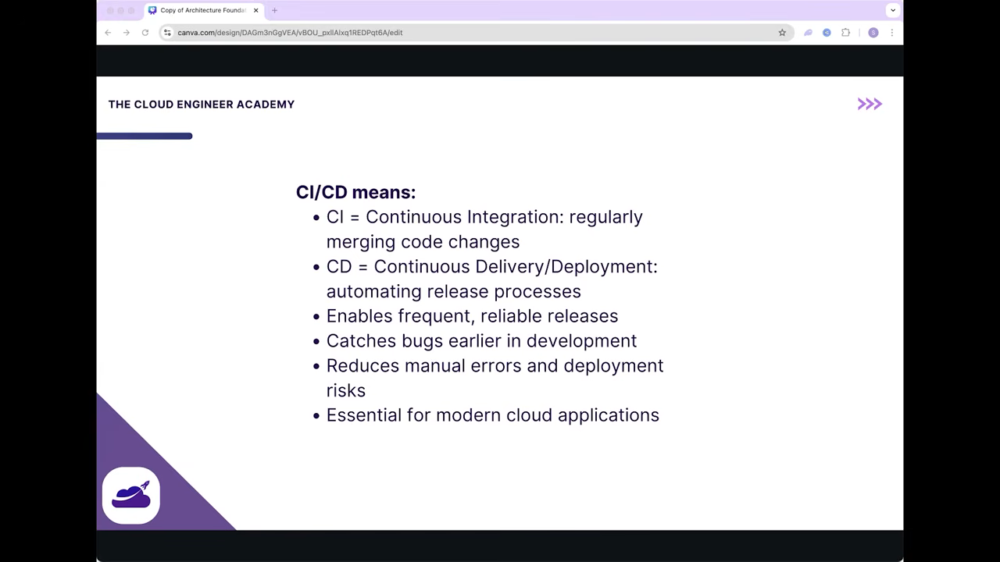
발표자는 여기서 수동 승인과 자동화의 차이를 짚어요. 보통은 누가 코드를 올리면 리뷰어가 승인하고, 테스트·QA·운영 환경마다 사람이 문을 열어 줘요. 지속적 배포는 테스트를 통과하면 그 문까지 자동으로 넘겨요. 그리고 그날 아침 자기 개발자들에게 한 말을 전해요.
Software is only valuable in front of customers.
소프트웨어는 고객 앞에 있을 때만 가치가 있어요.
— 영상 01:59:17
시프트 레프트
개발 과정은 보통 계획에서 배포까지 왼쪽에서 오른쪽으로 그려요. 시프트 레프트는 보안과 품질 검사를 그 그림의 왼쪽, 즉 초기로 옮긴다는 뜻이에요. 슬라이드는 전통적인 방식의 문제도 적어 놨어요. 보안이 운영 직전의 마지막 관문이라서 문제가 가장 비싸고 고치기 어려울 때 발견됐다는 거예요.
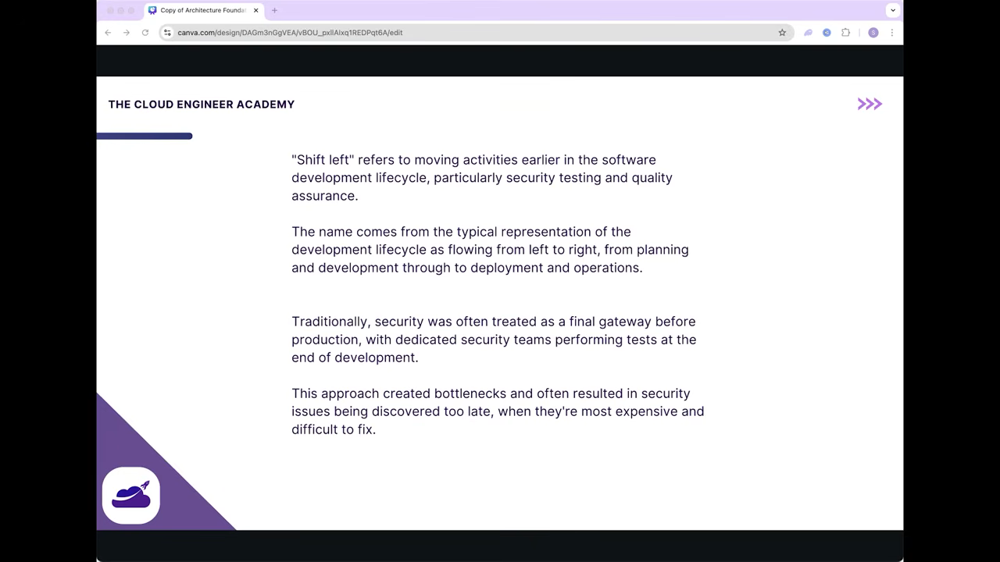
발표자의 예가 구체적이에요. 석 달 걸려 기능을 만들었는데 출시 직전 보안팀이 '문제가 백 개라 못 내보낸다'고 해요. 그러면 개발, 테스트, QA, 리뷰를 다시 돌아야 해요. 요구 사항을 쓰는 설계 단계부터 보안을 생각하고, CI/CD 파이프라인에 SAST(Static Application Security Testing)와 DAST(Dynamic Application Security Testing) 같은 검사를 넣으면 보안이 모두의 책임이 돼요. 발표자는 아직도 대부분의 회사가 보안을 맨 끝에 붙인다고 봐요.
Terraform과 CloudFormation 중 무엇을 쓸까요
슬라이드의 기준은 세 가지예요. 단일 클라우드인지 멀티 클라우드인지, 팀의 경험과 학습 곡선, 생태계와 커뮤니티 지원이에요.
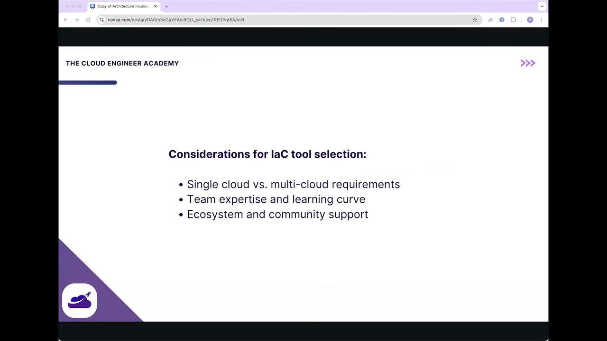
첫 질문은 '지금은 아니어도 1~2년 뒤에 GCP 같은 다른 클라우드를 쓸 가능성이 있나'예요. 그렇다면 CloudFormation처럼 한 클라우드 전용 도구는 빠지고 Terraform이 남아요. 다음은 팀이 어느 도구를 써 봤는지, 안 써 봤다면 배우는 데 얼마나 걸릴지예요.
모놀리스와 마이크로서비스
슬라이드는 장점과 판단 기준을 한 장에 담았어요. 모놀리스는 개발·배포·테스트가 단순해요. 마이크로서비스는 확장, 팀 자율, 기술 선택의 유연함이 좋아요. 판단 기준은 팀 규모, 애플리케이션 복잡도, 확장 요구예요.
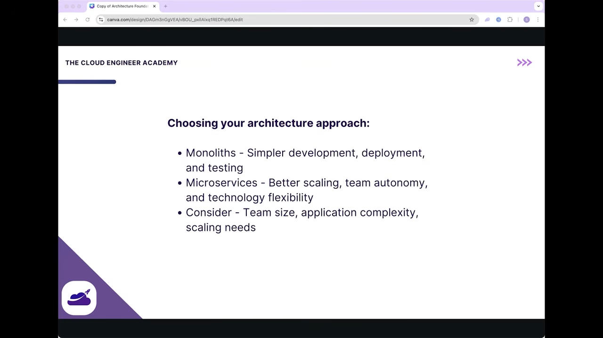
발표자는 운영 부담을 숫자로 말해요. 마이크로서비스가 50개면 배포, 관리, 모니터링, 확장을 50번 따로 해야 해요. 모놀리스는 하나를 컨테이너에 담아 내보내면 끝이에요. 넷플릭스나 구글 같은 큰 회사는 마이크로서비스를 쓰지만, 발표자의 스타트업은 고민할 것도 없이 모놀리스로 시작했다고 해요.
Git 기본 흐름
수강생과 함께 순서를 하나씩 맞춰 가요. 저장소가 있으면 클론하고, 없으면 만들거나 git init을 해요. 브랜치는 하는 일 이름으로 만들고(예: EC2 인스턴스 타입 변경), 꼭 체크아웃해서 그 브랜치에 들어갔는지 확인해요.
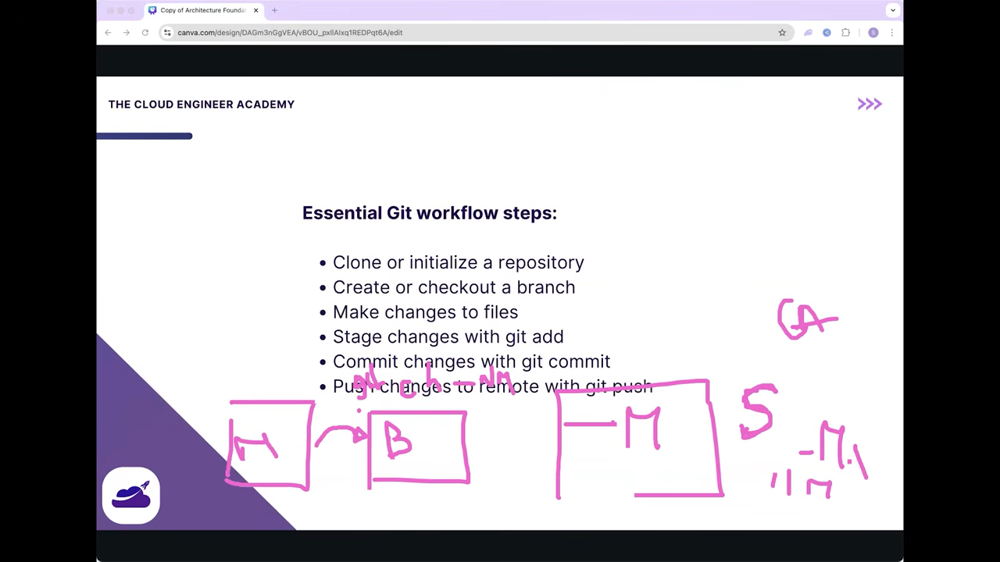
커밋 메시지를 왜 쓰는지도 물어요. 답은 기록이에요. 리뷰어가 커밋마다 무엇을 바꿨는지 보고, 메시지가 실제 코드 변경과 맞는지 확인해요. 그래서 큰 덩어리를 한 번에 올리지 말고 add와 commit을 자주 하라고 해요. 발표자 본인은 GitHub에서 저장소를 먼저 만들고 클론해요. 그래야 GitHub 연결이 되는지도 같이 확인돼요.
EC2와 Lambda는 언제 쓰나요
슬라이드는 두 서비스를 세 쌍으로 맞세워요. 내가 관리하는 가상 서버 대 필요할 때 도는 서버리스 함수, OS(Operating System)·네트워크·확장의 완전한 통제 대 인프라 관리 없음, 놀 때도 과금 대 실행 시간만 과금이에요.
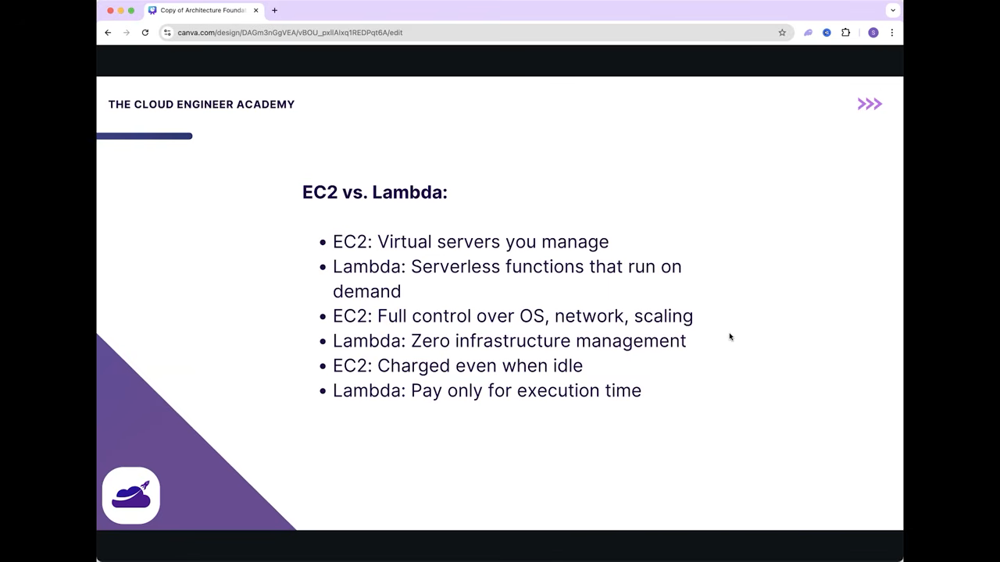
발표자는 빨리 움직여야 하면 Lambda를 고른다고 해요. 인프라 관리와 보안, 확장을 생각하지 않아도 되니까요. 다만 수강생이 짚은 제약이 있어요. Lambda는 한 번에 최대 15분까지만 돌아요. 매일 자정에 20분 걸리는 배치라면 Lambda는 답이 아니에요. 발표자는 Lambda도 결국 내부에서는 EC2 위에서 돈다고 덧붙여요.
IaC가 꼭 필요한 이유
마지막 질문의 답은 '같은 구성을 어느 환경에나 반복해서 배포할 수 있다'예요. 발표자는 보다폰에서 겪은 일을 들어요. 프리프로덕션에서는 잘 되던 게 5분 뒤 운영에 올리면 안 됐어요. 기록하지 않은 설정 차이가 환경마다 쌓였기 때문이에요.
AI로 인프라 코드를 만드는 이야기도 나와요. Lovable, Bolt, v0, Cursor 같은 도구로 프런트엔드를 만드는 건 괜찮다고 해요. 결과가 눈에 보이니까요. 하지만 인프라는 잘못 바꾸면 운영 서버가 내려가고, 모르는 사이 비용이 붙을 수 있어서 훨씬 꼼꼼한 검토가 필요하다고 해요. 콘솔로 만든 인프라를 코드로 가져오는 도구로는 Terraformer와 AWS의 Console-to-Code가 언급돼요.
장애 시나리오로 디버깅 연습
여기서부터 영상의 두 번째 부분인 '적용' 수업이에요. 장애 상황 하나를 슬라이드에 띄우고 수강생이 채팅으로 원인을 쏟아내면, 발표자가 빠진 것을 끌어내고 정답 슬라이드를 보여 줘요. 발표자는 시청자에게도 영상을 멈추고 먼저 답해 보라고 권해요.
먼저 전체를 표로 모았어요. 슬라이드의 정답과 수업에서 나온 보충을 함께 적었어요.
| 상황 | 먼저 볼 곳 |
|---|---|
| EC2에 SSH(Secure Shell)를 하면 connection timed out | 보안 그룹의 22번 포트 규칙(내 IP 허용), 키 페어(.pem), 퍼블릭 IP, 인터넷 게이트웨이가 있는 퍼블릭 서브넷인지 |
| S3 버킷은 보이는데 업로드는 Access Denied | 목록 권한(s3:ListBucket)은 있고 업로드 권한(s3:PutObject)이 없어요. 빠진 권한을 더해요 |
| EC2는 도는데 'This site can't be reached' | 보안 그룹의 80·443 규칙, 라우팅 테이블의 인터넷 게이트웨이 경로, 재시작 후 바뀐 퍼블릭 IP(탄력적 IP) |
| 새 IAM 사용자가 콘솔에 로그인 못 함 | 콘솔 비밀번호, CLI/API만 필요한지, 계정 ID가 들어간 로그인 URL(Uniform Resource Locator), 권한 있는 IAM 그룹 |
| 어제 되던 앱이 오늘 RDS에 연결 못 함 | 먼저 '무엇이 바뀌었나'. RDS 보안 그룹이 EC2를 허용하는지, 서브넷 그룹, DB 자격 증명 |
| 비어 보이는 S3 버킷이 안 지워짐 | 버전이 남은 객체, 끝나지 않은 멀티파트 업로드. 버킷을 완전히 비운 뒤 삭제 |
| Lambda가 3초에 끊기는데 코드는 10초 걸림 | 타임아웃 설정을 늘려요. 최대 15분 |
SSH가 안 될 때
수강생들은 보안 그룹, NACL, IAM, 인스턴스 실행 여부를 꼽았어요. 정답 슬라이드에는 네 줄이 있어요. 보안 그룹에 내 IP의 22번 포트를 열었는지, 맞는 .pem 키를 쓰는지, 인스턴스에 퍼블릭 IP가 있는지, 인터넷 게이트웨이가 달린 퍼블릭 서브넷인지예요.
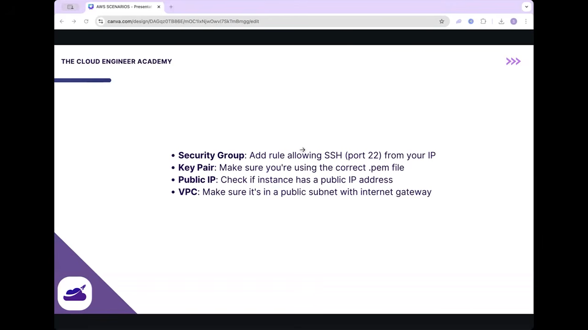
인스턴스가 프라이빗 서브넷에 있으면 바로 들어갈 수 없어요. 퍼블릭 서브넷에 둔 점프 박스에 먼저 접속하고, 거기서 다시 넘어가야 해요.
서버는 도는데 사이트가 안 열릴 때
채팅에는 DNS(Domain Name System), 로드 밸런서 상태, CDN(Content Delivery Network) 장애까지 나왔어요. 발표자가 기다린 답은 '인터넷 게이트웨이로 가는 경로'였어요. 정답 슬라이드는 세 가지예요. 보안 그룹에 HTTP(80)와 HTTPS(443) 규칙이 없거나, 라우팅 테이블에 인터넷 게이트웨이 경로가 없거나, 재시작하면서 퍼블릭 IP가 바뀐 경우예요.
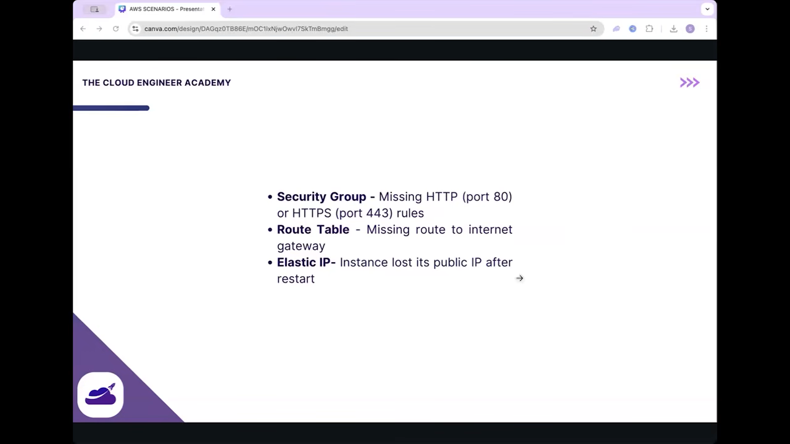
RDS 연결 문제에서는 접근 방법 자체를 강조해요. 어제 되던 게 오늘 안 되면, 무언가가 바뀐 거예요. IT(Information Technology) 운영에서는 그 환경에 들어간 변경부터 찾아요. 대개 누군가의 배포가 원인이에요. 그다음 DB에 ping이나 telnet을 쳐서 응답이 오는지 확인해요.
비어 보이는 버킷이 안 지워질 때
발표자 본인도 자주 겪는 일이라고 해요. 정답 슬라이드는 버전이 남은 객체를 먼저 다 지우고, 끝나지 않은 멀티파트 업로드를 취소하고, 버킷을 완전히 비운 뒤 삭제하라고 해요.
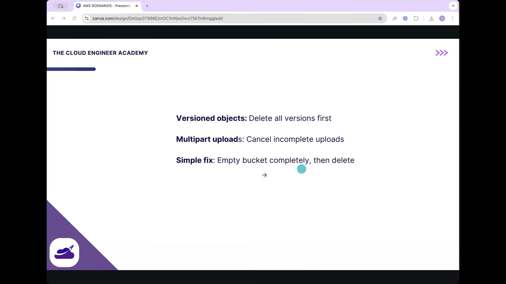
수업 중 '강제 삭제 옵션이 있나요?'라는 질문에 발표자는 확실하지 않다고 답했어요.
설계 문제: 사진 공유 앱과 영상 강의 플랫폼
장애 문제 뒤에는 설계 문제가 두 개 나와요. 첫째는 인스타그램 같은 사진 공유 앱이에요. 하루 수백만 장이 올라오고, 전 세계에서 빨라야 하고, 크기 조정·필터·얼굴 인식이 필요해요. 팀은 작고 예산도 적어요.
정답 슬라이드는 서비스 넷을 묶어요. 원본은 S3에 두고 CloudFront로 전 세계에 뿌려요. 크기 조정, 필터, 썸네일은 Lambda가 처리하고, 앱은 API Gateway로 통신해요. 사용자 프로필, 사진 메타데이터, 좋아요, 댓글은 DynamoDB에 넣어요.
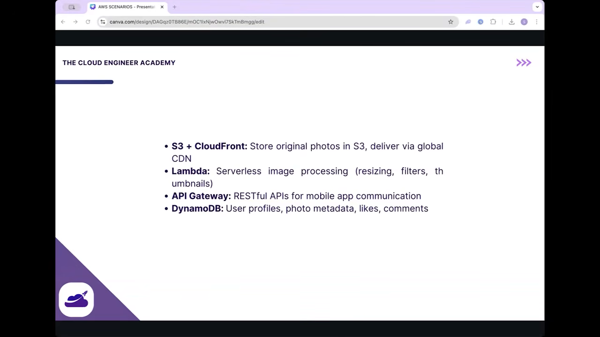
수업에서는 인증용 Cognito를 더하고, 좋아요와 댓글을 어디에 저장할지 물어서 DynamoDB를 끌어내요. 이런 대량의 비정형 데이터라면 RDS보다 DynamoDB가 맞다고 해요. 왜 이 구조가 좋은지에 대한 답도 모았어요. 확장이 쉽고, 서버리스라 작은 팀이 관리할 게 적고, 구성 요소가 분리돼 있고, 쓴 만큼만 내요.
둘째 문제는 즉석에서 읽어 준 거예요. 1TB 분량의 강의 영상을 서비스하는 이러닝 회사에서, 영국 학생은 문제가 없는데 아시아 학생만 영상이 느리다고 해요. 답은 영상 전달과 영상 처리 두 갈래예요.
- 전달: S3에 영상을 두고 CloudFront로 배포해요. 자주 보는 영상은 리전 엣지 캐시에 두고, S3 전송 가속도 켜요. 인기 영상은 사용자와 가까운 리전 버킷에 따로 둬요.
- 처리: Elemental MediaConvert로 여러 해상도로 트랜스코딩하고, Lambda로 처리하고, 끝나면 SNS(Amazon Simple Notification Service)로 알려요.
- 비용: 안 보는 영상은 더 싼 S3 스토리지 계층으로 옮겨요. 엣지 캐싱은 공급자에게 비용이 더 든다고 해요.
바꾼 뒤 정말 나아졌는지는 측정해야 해요. 발표자는 브라우저 개발자 도구로 응답 시간을 재는 방법과 함께, 고객 불만이 줄어드는지도 신호라고 해요. 보다폰에서는 장애가 나면 고객센터 통화량이 바로 치솟았다고 해요.
DB·설계·보안 면접 질문과 AI 데모
이번 수업은 채팅 대신 수강생을 한 명씩 지목해서 답하게 해요. 실제 면접처럼 즉석에서 말하게 하려는 거예요.
SQL과 NoSQL, 언제 NoSQL을 고르나요
차이는 금방 정리돼요. SQL(Structured Query Language)은 테이블과 열로 저장하고 ACID(Atomicity, Consistency, Isolation, Durability)를 지켜요. NoSQL은 키와 값처럼 유연한 스키마라 아무 모양의 데이터나 받아요. 발표자는 여기에 비용을 붙여요. 저장 방식을 우리가 고민하지 않는 대신 AWS가 고민해 주고, 그 값을 받는다는 거예요. 그래서 DynamoDB가 보통 RDS보다 비싸다고 해요.
'언제 NoSQL을 고르나요?'에서 수강생들은 데이터 모양 이야기만 했어요. 발표자가 원한 답은 둘이에요.
- 수평 확장: RDS는 인스턴스 크기와 저장 용량을 골라야 하는 고정 용량이에요. NoSQL은 옆으로 늘어나요.
- 개발 속도: 테이블을 설계하고 데이터 모델을 맞추는 시간이 빠져요. 기능 개발에만 집중하며 빨리 내보낼 수 있어요. 비용은 더 들지만요.
좋은 시스템 설계의 원칙
수강생들이 가용성, 신뢰성, 보안, 확장성을 꼽은 뒤 발표자가 두 개를 더 끌어내요. 하나는 성능인데, 무엇을 최적화하냐고 다시 묻자 '응답 시간'이 나와요. 다른 하나는 앱이 아니라 데이터에 대한 원칙으로, '일관성'이에요. 사용자 모두가 정확한 데이터를 제때 받아야 한다는 거예요. 그래서 원칙은 확장성, 신뢰성, 가용성, 일관성, 보안, 성능 여섯 개예요.
캐싱 질문에서는 '자주 접근하는 데이터'를 둔다는 답이 나와요. 정답 슬라이드는 캐시를 둘 수 있는 층을 다섯 개로 적었어요.
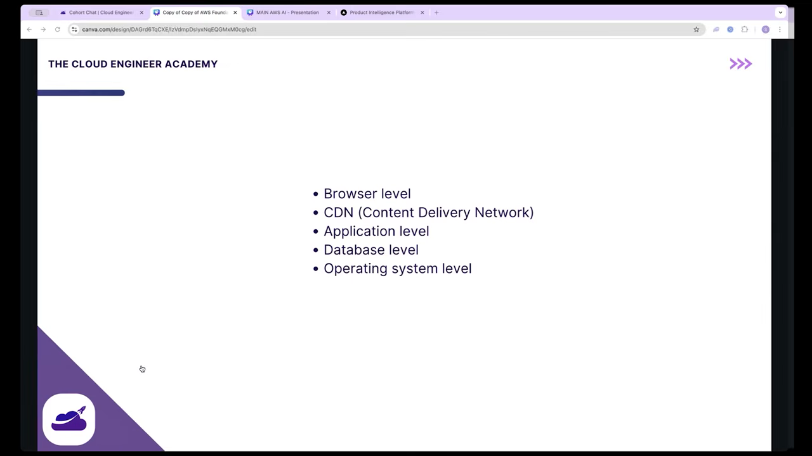
보안 모범 사례는 네 개부터
정답 슬라이드에는 아홉 줄이 있어요. MFA(Multi-Factor Authentication), 최소 권한, 저장·전송 암호화, 키와 비밀번호 교체, 로깅과 모니터링, 패치, VPC와 보안 그룹, 백업과 재해 복구, 보안 감사와 모의 해킹이에요.
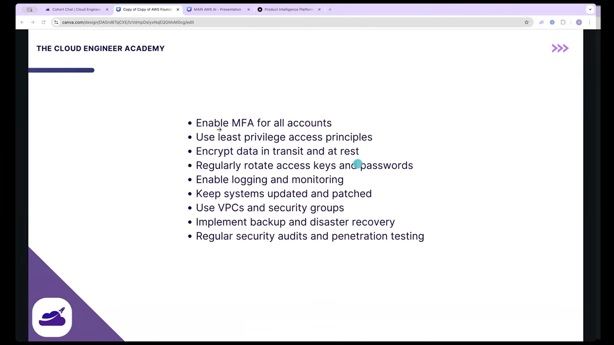
발표자의 조언은 다 외우지 말라는 거예요. 면접에서 물으면 모든 계정의 MFA, 최소 권한 원칙, 저장·전송 암호화를 먼저 말해요. 그다음 네트워크 계층 보안을 넷째로 말하고, 더 원하면 로깅과 모니터링을 덧붙여요. 그 이상은 필요 없다고 해요.
사용자 백만 명을 받는 웹앱
수강생들이 로드 밸런싱, 오토스케일링, 서버리스, 캐싱, 멀티 AZ(Availability Zone)를 꼽은 뒤에도 빠진 게 둘 있었어요. DB 성능을 위한 읽기 복제본, 그리고 '백만 명에게 더 빨리 보내려면?'에 대한 CDN이에요. 정답 슬라이드는 이걸 아홉 줄로 모았어요.
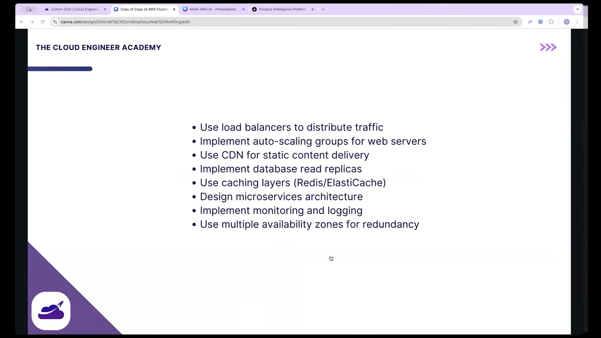
AWS AI 서비스 세 개를 엮은 데모
질문을 마치고 발표자가 직접 만든 데모를 보여 줘요. 운동화 사진을 올리고 '잘 맞고, 아내와 저녁 먹으러 갈 때 신는데, 아내는 별로래요' 같은 리뷰를 쓴 뒤 'Analyze with AI'를 눌러요. 그러면 제품 요약, 고객 인사이트, 추천 행동, 경쟁 우위가 나와요.
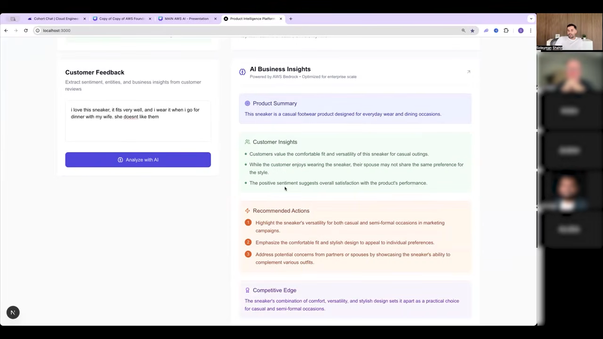
발표자는 '구조를 맞혀 보자'며 수강생에게 묻고, 그다음 구조 슬라이드를 띄워요. ① 이미지는 미리 서명된 URL로 S3에 올라가요. ② Rekognition이 사진 속 물체를, Comprehend가 리뷰의 감정과 핵심 문구를 동시에 분석해요. ③ 두 결과를 Bedrock의 Claude가 받아 사업 인사이트를 만들어요.
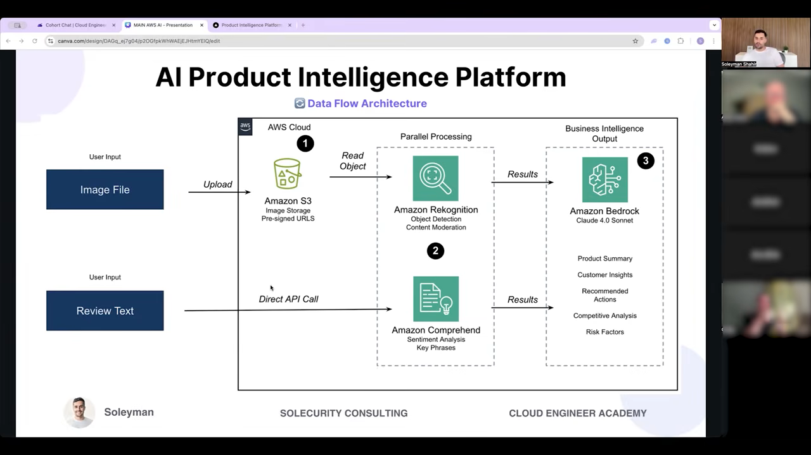
발표자가 강조하는 건 '이미 만들어진 지능'을 빌려 쓴다는 점이에요. Rekognition 같은 물체 인식을 직접 만들려면 라벨 붙은 사진 수백만 장과 학습이 필요해요. AWS가 그걸 해 뒀으니 요청만 보내면 돼요. 그래서 모든 회사가 이미 가진 데이터로 이런 걸 만들 수 있다고 해요. 고객 만 명의 세무 자료를 가진 회계 회사라면 맞춤 자산 관리 제안을 만들 수 있다는 식이에요.
비용 질문에는 Claude 요금 슬라이드로 답해요. 슬라이드 기준으로 Claude Opus 4는 입력 100만 토큰당 15달러, 출력 75달러예요. Claude Sonnet 4는 3달러와 15달러예요. 100만 토큰은 대략 75만 단어예요.
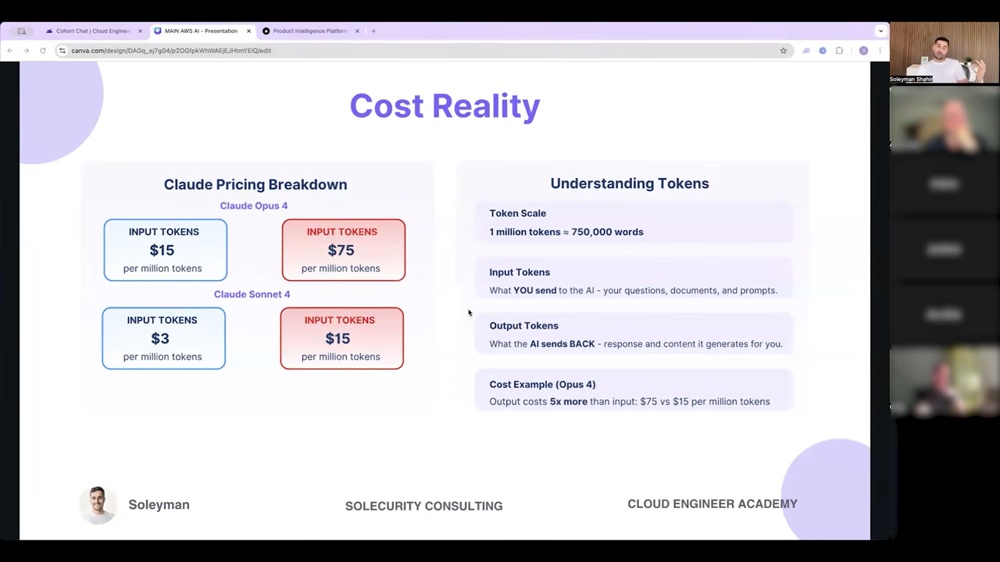
발표자는 Claude를 직접 쓰든 Bedrock으로 쓰든 같은 값이라고 말해요. 앱의 미래 비용을 추정하려면 서비스마다 과금 방식을 확인한 뒤, 저장량과 요청 수, 프롬프트 길이를 곱해 보라고 해요.
발표자는 자기 유튜브 영상에서 다룬 SageMaker 슬라이드도 잠깐 보여 줘요. 직접 모델을 다루는 SageMaker의 비용을 세 가지로 정리했어요.
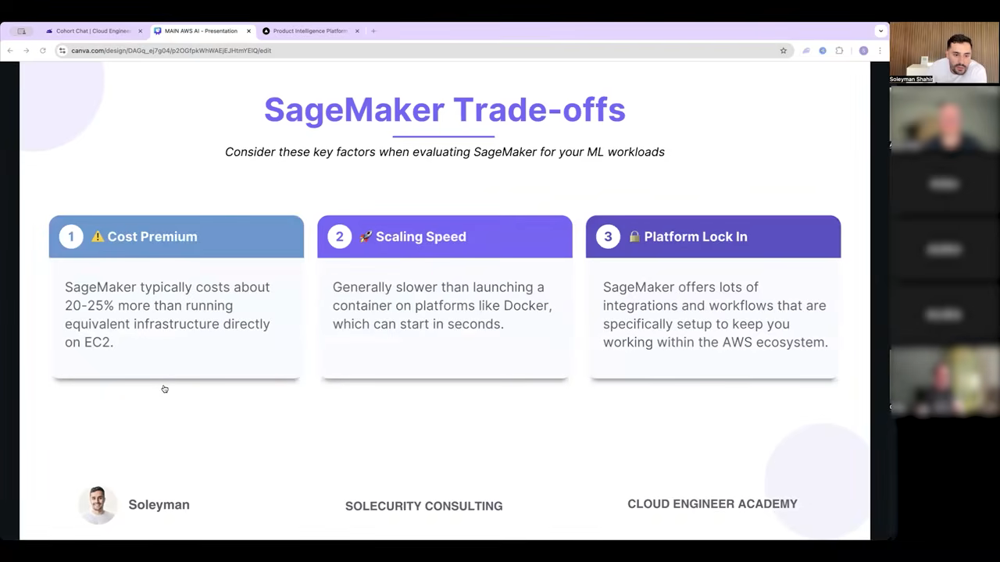
끝으로 앱 구조에 대한 생각을 덧붙여요. 지금까지 풀스택은 화면, 업무 로직, 데이터의 세 계층이었어요. 이제 모든 앱에 네 번째인 'AI 계층'이 붙을 거라고 봐요. 그 계층이 어디에 자리 잡을지, 계산과 데이터를 감쌀지 전체를 감쌀지는 아직 정해지지 않았다고 해요.
Cursor로 Terraform 짜고 AgentCore 공부하기
영상의 세 번째 부분은 클라우드 커리어가 향하는 곳이에요. 첫 수업에서 발표자는 Cursor를 화면에 띄워요. VS Code를 갈라져 나온 편집기라 왼쪽 파일 트리와 가운데 코드는 익숙하고, 오른쪽에 AI 채팅창이 붙어 있어요. 발표자는 기초를 배우는 단계가 아니라면 이제 이 생성 도구를 써야 한다고 해요. 예전엔 품질이 미덥지 않았지만 지금은 쓸 만하다는 거예요.
대화로 Terraform 짜기
처음엔 빈 infra 폴더와 main.tf 하나를 만들고 Sonnet 모델에게 Terraform 프로젝트 뼈대를 부탁해요. README, 변수, 출력 파일이 금세 생겨요. 그런데 뼈대만 달라고 했는데 VPC와 서브넷까지 만들어 버려요. 발표자는 이걸 지우면서 '이래서 생성된 코드를 읽을 줄 알아야 한다'고 해요.
다음 요청은 '가용 영역 세 개, 영역마다 서브넷 셋(퍼블릭 둘, DB용 프라이빗 하나), 라우팅까지'예요. 오른쪽 패널의 'What You Got'에 결과가 정리돼요. VPC 10.0.0.0/16, 퍼블릭 서브넷 6개, 프라이빗 서브넷 3개, 인터넷 게이트웨이, AZ마다 NAT 게이트웨이와 탄력적 IP 하나씩, 퍼블릭 라우팅 테이블 하나와 프라이빗 라우팅 테이블 셋이에요.
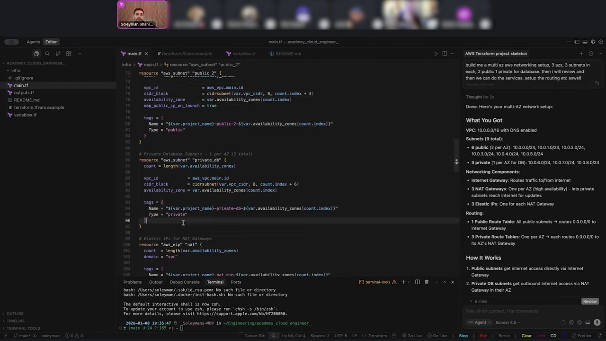
AI는 생각 과정에서 'NAT 게이트웨이는 비싸니 비용을 아끼려면 하나만 둘 수도 있다'고 적어요. 발표자는 이어서 'NAT는 셋 말고 하나만'을 대기열에 넣어 두고, EC2와 RDS를 추가하라고 해요. 한 파일에 몰린 코드를 vpc.tf, security_groups.tf, ec2.tf, rds.tf로 나누게도 해요. 수강생이 IAM 역할은 없냐고 묻자 그것도 시켜요. 새 iam.tf가 따로 생겨요. 앞서 파일을 나누라고 한 패턴을 따른 거예요.
다음 화면은 IAM 역할에 대한 AI의 설명과 모델 선택 메뉴예요. 오른쪽 위는 EC2가 역할에서 임시 자격 증명을 받아서 '하드코딩한 키가 필요 없다'는 설명이에요. 아래 메뉴에는 Composer 1, Opus 4.5, Sonnet 4.5, GPT-5.2, Gemini 3 Flash 같은 모델이 보여요.
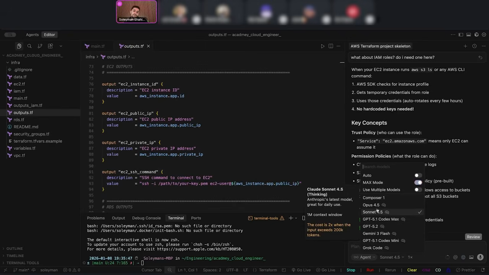
다른 모델에게 검토 맡기기
한 모델로 만들고 다른 모델로 검토할 수도 있어요. 발표자는 모델을 GPT-5.2로 바꾸고 '보안과 동작, 모범 사례를 검토해 줘'라고 해요. 모델은 할 일 세 개를 스스로 세워요. 설정 점검, 가장 큰 문제 수정, 그리고 terraform validate 실행이에요. DB 비밀번호 기본값이 changeme123로 남은 걸 찾아서 변수나 환경 변수로 받게 바꾸기도 해요.
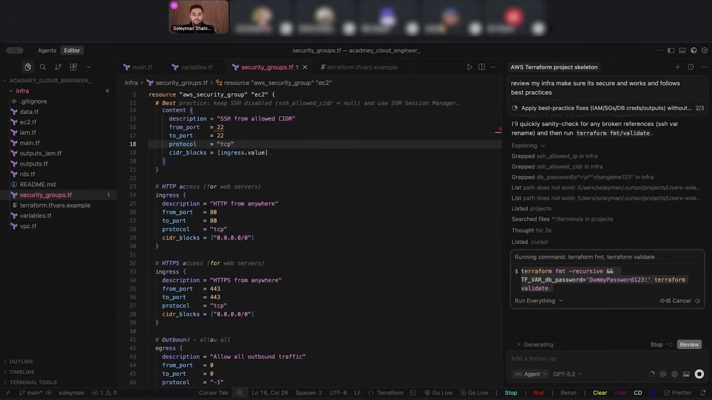
CLI에 접근할 수 있어서 명령도 대신 쳐 줘요. 다만 발표자 경험으로는 가끔 멈추기도 해요. 그리고 AI를 쓸수록 이런 판단이 중요해진다고 강조해요. 생성된 코드가 맞는지 알려면 Terraform 코드가 원래 어떻게 생겨야 하는지, VPC와 EC2를 어떻게 세우는지 알고 있어야 해요. 수작업으로 몇 시간 걸릴 일이 몇 분이 되지만, 엔지니어의 가치는 코드 작성이 아니라 문제를 풀고 결과를 검토하는 데 있어요.
큰 회사들이 보안 때문에 이런 도구를 막는 경우도 많다고 해요. 발표자는 보다폰에 Slack을 들여올 때 보안팀의 거센 반대를 겪었던 이야기를 해요. 채팅 도구도 그랬으니 코드 생성 도구는 더 어렵다는 거예요. 그래서 AI를 매일 쓰는 작은 스타트업이 큰 회사를 흔들 수 있다고 봐요. 발표자는 사진 한 장으로 칼로리를 세는 Cal AI가 MyFitnessPal 같은 오래된 앱의 시장에 들어간 사례를 들어요.
올해 하나만 배운다면: AgentCore
수업 후반에 발표자는 GitHub 저장소 하나를 열어요. Amazon Bedrock AgentCore 샘플이에요. 발표자는 2026년을 '기업용 AI 에이전트의 해'로 보고, AWS가 이 서비스에 모든 걸 걸고 있다고 해요. 아카데미 공부를 일주일 멈추더라도 이 저장소를 Cursor에 넣고 무엇을 하는지 설명하게 해 보라고 권해요.
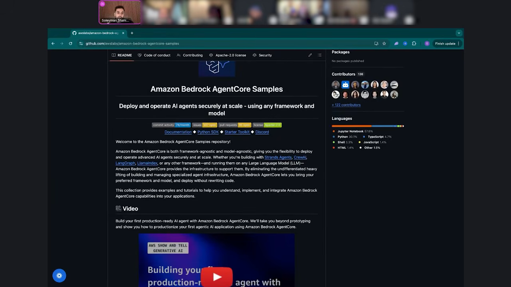
awslabs/amazon-bedrock-agentcore-samples가 발표자가 추천한 저장소예요. 발표자는 기여자가 140명쯤, 별이 2천 개쯤이라고 읽어요.
영상 04:29:24에서 보기
README의 튜토리얼 목록은 AgentCore를 구성 요소별로 나눠요. 발표자는 이걸 '애플리케이션의 컨테이너 같은데, 에이전트용'이라고 설명해요. 에이전트가 돌고, 무언가에 접근하고, 실행하게 해 주는 기반이라는 거예요.
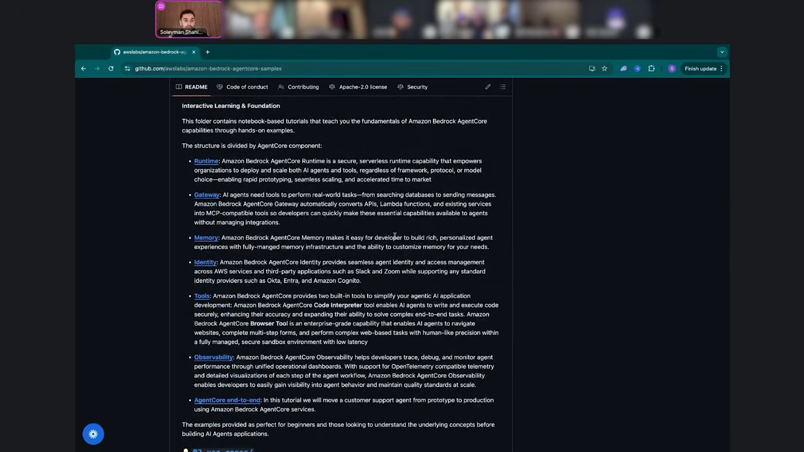
| 구성 요소 | README가 말하는 역할 |
|---|---|
| Runtime | 프레임워크나 모델에 상관없이 에이전트와 도구를 배포하고 확장하는 서버리스 실행 환경 |
| Gateway | API, Lambda 함수, 기존 서비스를 MCP 호환 도구로 바꿔 에이전트가 쓰게 함 |
| Memory | 관리형 메모리로 개인화된 에이전트 경험을 만듦 |
| Identity | AWS 서비스와 Slack, Zoom 같은 외부 앱에 대한 에이전트 신원과 접근 관리 |
| Tools | 코드를 실행하는 Code Interpreter와 웹을 조작하는 Browser Tool |
| Observability | 에이전트 단계별 추적·디버깅·모니터링 대시보드 |
blueprints 폴더에는 처음부터 끝까지 이어진 예시가 있어요. 발표자가 연 고객 서비스 에이전트의 구조도를 보면, AWS에서 일해 본 사람이라면 대략 읽을 수 있다고 해요.
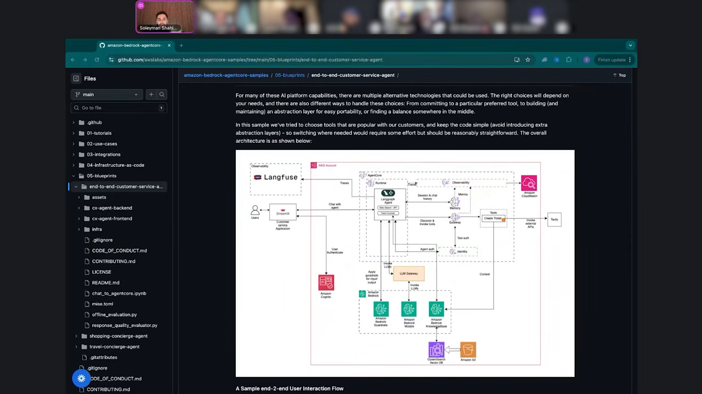
공부법도 구체적이에요. 하루에 한 시간씩 읽고, Cursor로 물어 가며 이해하고, YouTube에서 AWS re:Invent 2025의 AgentCore 세션을 찾아보래요. 무언가 만들었으면 '이번 주말에 AWS에 AI 에이전트를 만들었고, 이렇게 만들었고, 이런 문제가 있었다'고 LinkedIn에 올리라고 해요. 이력서에 '에이전트를 AWS에 배포하고 운영할 수 있다'고 쓸 수 있으면 확실히 눈에 띈다는 거예요.
발표자 본인은 회사의 Slack, Notion, GitHub, 결제 시스템에 접근하는 'AI 비서실장' 에이전트를 짓는 중이라고 해요. 비서를 뽑으려다 직접 만들어 보기로 했대요. 팀에는 일주일에 하루 AI 없이 일하는 날도 있다고 해요. 도구에 중독되듯 기대지 않으려는 거예요.
보안 Q&A: 빨리 내보내고 눈에 띄게 지원하기
이 챕터의 제목은 '클라우드 보안 Q&A'지만, 실제로는 클라우드 보안 과정을 듣는 수강생들과의 자유 질문 시간이에요. 화면은 줄곧 화상 회의 얼굴뿐이라, 말로 설명한 구조를 그림으로 옮겼어요. 대화는 크게 셋으로 흘러가요. 보안을 아는 엔지니어의 자리, 빨리 내보내는 문화, 그리고 눈에 띄게 지원하는 법이에요.
보안을 아는 엔지니어
클라우드 보안을 배운 뒤 어떤 직무를 노리냐는 질문에, 발표자는 클라우드 보안, 클라우드 엔지니어, DevOps, DevSecOps를 꼽아요. 보안 아키텍트는 그다음 단계예요. 다른 수강생은 이 지식이 보안 직무가 아니어도 어디서든 쓰인다고 말하고, 발표자도 동의해요. 공격 표면을 아는 엔지니어는 설계도 디버깅도 다르게 하고, 보안을 소홀히 하는 사람이 많으니 면접에서 바로 차이가 난다는 거예요.
AI 보안은 아직 이르다고 봐요. 새 기술이 나오면 회사들은 뒤처지지 않으려고 먼저 도입하고, 실제 사용자를 받기 직전에야 보안을 붙여요. 모두가 시프트 레프트를 말하지만 새 기술 앞에서는 늘 이렇게 된다고 해요. 발표자는 LinkedIn에서 본 글도 전해요. AI 엔지니어만 뽑던 흐름이 꺾이고, AI를 실제 운영 환경에 올릴 전통적인 엔지니어를 다시 찾는다는 내용이에요. 그래서 2026년 채용은 좀 더 균형을 찾을 거라고 봐요.
완벽한 코드보다 빨리 내보내기
고객사 코드가 모범 사례를 따르냐는 질문에 발표자는 '대부분 엉망'이라고 답해요. 완벽한 코드의 시대는 지났고, 해킹당하지 않는 선에서 최대한 빨리 가는 게 중요하다는 거예요. 대신 보안 검사를 파이프라인과 인프라, PR(Pull Request) 단계에 넣어서 속도와 보안을 함께 챙겨요.
발표자가 예전 팀에서 배운 원칙은 'build it, ship it, love it'이에요. 직접 만들고, 운영까지 직접 내보내고, 운영팀에 넘기지 않고 계속 돌보라는 뜻이에요. 빨리 가다 보면 무언가 깨지는데, 그게 오히려 회사의 병목을 드러낸다고 해요.
대비되는 예가 보다폰이에요. 발표자가 있던 시절 IT팀은 분기에 한 번만 운영에 배포했어요. 열다섯 팀이 토요일 밤부터 일요일 밤까지 한 방에 모여, 스프레드시트를 보며 석 달 치 기능을 하나씩 올렸어요. 발표자의 팀이 애자일, DevOps, CI/CD, AWS, Slack을 들여오며 이 방식을 바꿨는데, 수십 년 일해 온 방식을 흔드는 일이라 반발과 정치가 컸다고 해요.
프로젝트 아이디어는 Upwork에서
발표자가 예전에 쓴 방법이 있어요. 프리랜서 플랫폼 Upwork에 올라온 일감을 둘러보면 회사들이 돈을 내고 풀고 싶어 하는 문제가 보여요. DevOps, Kubernetes, EC2 문제 같은 것들이에요. 그 문제를 자기 시간에 직접 풀어 포트폴리오에 올렸대요. 누군가 돈을 낼 문제를 풀 수 있다면, 나중에 누군가 나에게도 돈을 낼 거라는 생각이었어요.
눈에 띄게 지원하는 법
면접 과정은 회사마다 다르지만 발표자가 말한 전형적인 흐름은 아래와 같아요.
flowchart LR A["리크루터 스크리닝"] --> B["채용 매니저 면담
또는 기술 면접"] --> C["팀 여러 명과의 면접
(아키텍트·엔지니어·컨설턴트)"] --> D["함께 결정"]
발표자는 면접관이 누구인지 미리 조사하라고 해요. AWS 솔루션 아키텍트라면 EC2 이야기를 바로 해도 되지만, 비기술 의사결정자라면 말의 수준을 바꿔야 해요. 기술 면접에서 '제 경험을 짧은 프레젠테이션으로 보여 드려도 될까요?'라며 5분짜리 슬라이드를 꺼내는 사람은 거의 없어서, 그것만으로 소통 능력이 드러난다고 해요.
가장 구체적인 조언은 1분짜리 Loom 영상이에요. 발표자는 자기 회사 채용 공고에 '경력을 설명하는 1분 Loom 영상을 보내 달라'고 적어요. 그런데 지원자 수백 명 대부분이 그냥 지원 버튼만 눌러요. 발표자의 어림으로는 100명 중 2명쯤만 영상을 보내요.
긴 지원 메일도 읽히지 않는다고 해요. 'AI가 쓴 게 뻔한 문단' 대신 '관심 있어요, 이력서와 1분 영상이에요, 감사합니다' 정도면 된대요. 채용 담당자는 바쁘니 빨리 누르고 확인할 수 있어야 해요.
한 걸음 더 나간 방법도 있어요. 발표자가 '대표에게 전화하기'라고 부르는 거예요. 공고를 낸 회사의 창업자나 대표에게 연락해 '이 직무에 지원했는데 채용 담당자와 연결해 주실 수 있을까요'라고 부탁해요. 대표가 담당자에게 넘기면 회신이 와요. 가장 어려운 건 첫 연락을 받는 거고, 그다음은 실력으로 설득하면 된다는 거예요.
그래서 구직을 영업처럼 보라고 해요. 영업 개발 담당(SDR(Sales Development Representative))은 고객사와 미팅을 잡는 게 일이에요. 엔지니어 모자를 벗고 SDR 모자를 쓰면, 내 일은 면접을 잡는 거예요. 채용하는 사람을 찾고, 연락하고, 다시 연락해요.
그 밖에 나온 이야기
- 보안 인가: 영국 정부 보안 인가(SC(Security Check))가 있는 수강생은 공고만 올려도 컨설턴트들이 먼저 연락한대요. 발표자는 인가가 있으면 정부 일에서 평생 일자리가 있다며 최대한 유지하라고 해요.
- 경쟁사로 옮기기: 컨설팅 회사끼리, 은행끼리, 빅테크끼리는 서로 인재를 데려가요. 발표자도 영국 내무부 프로젝트에서 같이 일하던 다른 컨설팅 회사들에게서 제안을 받았대요.
- 먼저 만들어 보이기: 한 수강생은 일자리에 지원하는 대신 작은 시제품을 먼저 만들어 고객 후보에게 보여 주고, 좋아하는 곳과 여섯 달 목표를 정한대요. 스스로 '프랙셔널 커리어'라고 불러요.
채용 담당자가 보는 시장과 이력서
네 번째 부분은 취업이에요. 첫 수업은 채용 담당자 Gaz가 맡아요. 기술 채용만 10년 가까이 한 사람으로, 에이전시에서 6년, 클라우드 컨설팅 회사 Contino에서 3년 일했어요. 최근 1년은 지사 없이 전 세계에서 사람을 뽑는 원격 근무 기업에서 일하고 있어요. 이 회사는 컨설팅과 함께 클라우드 비용 최적화 제품을 팔아요. Gaz 본인은 '나는 전혀 기술자가 아니다'라고 말해요.
시장: 뽑을 사람이 모자라요
Gaz의 회사는 47개국에 160명 남짓이 일하고, 올해만 50% 커졌고, 열린 자리가 40개쯤이라고 해요. 고객사의 클라우드 비용은 늘기만 하니 비용 최적화 일감도 늘어요. 주변 회사들도 '필요한 만큼 빨리 뽑지 못한다'고 한대요.
주니어 자리는 있지만 예전보다 적다고 솔직하게 말해요. AI 덕에 사람마다 할 수 있는 일이 늘어서예요. Gaz의 회사도 완전 원격이라 신입을 일대일로 가르치기 어려워 보통 2~3년 차부터 뽑아요. 그래도 온라인 지원만 하지 않고 LinkedIn에서 사람과 교류하고 컨퍼런스에 나가는 사람은 경력과 상관없이 기회를 잡는다고 해요.
가장 큰 변화: 제품 엔지니어
예전 Contino 시절에는 AWS 컨설팅 경험에 Terraform, Ansible, 약간의 프로그래밍만 있으면 거의 채용이었대요. 지금은 다르다고 해요. 사람들이 AI로 더 빨리 만들고 더 많이 자동화하니, 기술만으로는 차별이 안 돼요. 그래서 찾는 게 '제품 엔지니어'의 관점이에요.
Gaz의 설명은 간단해요. 소프트웨어 엔지니어는 '파이썬으로 이 앱을 만들었다'에서 멈춰요. 제품 엔지니어는 '이 도구로 이렇게 만들었고, 그 결과 사업에 이런 영향이 있었다'까지 말해요. 지원자의 80~90%는 요구 기술을 갖췄으니, 합격과 불합격을 가르는 건 이 사고방식이라고 해요.
이력서는 이렇게
Gaz의 이력서 조언을 한 장으로 모으면 아래와 같아요. 왼쪽은 그가 자주 보는 이력서, 오른쪽은 권하는 이력서예요.
- 회사 소개에 두 줄을 쓰지 마세요. 읽는 사람은 회사가 뭘 하는지가 아니라 내가 무엇을 만들었는지를 알고 싶어 해요.
- 숫자로 말하세요. '이 도구를 써서 배포 속도가 두 배가 됐다', '운영 장애가 줄었다'처럼 성과를 수치로 적어요.
- 안 써 본 키워드는 넣지 마세요. 공고 요건의 70% 정도를 갖췄다면 지원할 만하고, 나머지를 꾸며 넣을 필요는 없어요.
- 이력서는 하나면 돼요. 지원하는 회사에 맞춰 요약을 살짝 손볼 수는 있어요. 하지만 직무마다 새로 쓸 시간에 그 회사 사람 세 명에게 연락하는 편이 낫다고 해요.
- 공백은 설명하세요. Gaz 자신도 1년간 여행한 공백이 있고, 그걸 이력서에 적었어요. 설명이 없으면 나쁜 쪽으로 해석하는 결정권자가 있대요. 4개월 공백은 전혀 문제가 아니라고 해요.
- 경력 전환자는 프로젝트를 경력처럼. 25년 네트워크 지원 경력에서 넘어오는 수강생에게는 지금 하는 아카데미 과정을 하나의 직무 항목으로 적고, 거기 AWS, Terraform 등으로 만든 것을 자세히 쓰라고 해요.
AI로 이력서를 공고에 딱 맞게 고친 지원자가 많아졌다고 해요. 그런데 막상 대화해 보면 경험이 따라오지 않아요. 지원자에게도 담당자에게도 시간 낭비예요.
ATS만 믿으면 확률이 낮아요
Gaz의 회사는 Teamtailor라는 ATS(Applicant Tracking System)를 써요. 공고마다 에이전트가 돌면서 'AWS가 언급돼야 함' 같은 조건으로 지원서를 걸러요. 하루에 수백 명이 지원하니 다 읽을 수 없어서예요. 그래서 Gaz는 ATS에 걸리는 것보다 사람에게 직접 닿는 게 낫다고 해요. 정확한 수치는 없다며 예로 든 숫자는 이래요.
Gaz 본인은 LinkedIn 메시지로 온 이력서는 모두 읽고 피드백을 준다고 해요. 최근에는 ChatGPT에 'LinkedIn 참여를 끌어내는 SEO 전문가처럼 내 프로필을 최적화해 줘'라고 하며 프로필 화면 열 장과 이력서를 넣었대요. 그 뒤 6주쯤 사이에 연결이 천 명가량 늘었다고 해요.
면접에서 AI로 답을 읽으면
요즘 채용의 공통 문제는 면접 중 AI 사용이라고 해요. Gaz의 회사는 실제 업무를 재현하는 기술 면접에서는 AI를 마음껏 쓰게 해요. 하지만 대화형 면접에서 10초씩 기다렸다가 다른 화면의 AI 답을 읽는 지원자는 바로 떨어진대요. 그 면접은 생각을 자기 말로 설명하는지, 왜 그 도구를 골랐는지를 보는 자리라서요. 리크루터 첫 통화에서까지 그런 일이 있다고 해요. 헷갈리면 'AI를 써도 되는 면접인가요?'라고 미리 물으래요.
AI를 잘 쓰는 사람을 어떻게 가려내냐는 질문에, Gaz는 그날 받은 면접 피드백을 읽어 줘요. 떨어진 지원자는 문제를 근거 없이 AI 단계 두 개로 쪼개 복잡하게 만들었고, 생성된 결과를 충분히 검증하지 않았고, 최종 결과에 대한 주인 의식이 약했대요. 발표자는 이렇게 덧붙여요. 이제 면접은 '정답을 냈나'보다 '어떤 과정으로 생각하고 디버깅하나'를 보고, 그래서 화이트보드에 그리며 설명하는 시스템 설계가 더 중요해질 거래요.
연봉은 생산성만큼 오르나요
두 배 효율적이라고 연봉이 두 배가 되진 않는다고 해요. 그래도 이 기술이 있으면 더 벌 기회는 분명히 있대요. Gaz는 1년 여행에서 돌아와 한 회사의 최종 면접까지 갔다가 'AI로 무엇을 하고 있나요?'에 할 말이 없어 1년짜리 계약을 놓쳤대요. 조언은 두 가지예요. 일단 들어가서 가치를 보여 준 뒤 몸값을 다시 협상하고, 돈 이야기는 과정 초반에 꺼내서 서로 시간을 아끼래요.
커리어 Q&A: 양, 기록, 끝까지 만든 프로젝트
마지막 수업은 발표자가 수강생 한 명씩 고민을 듣고 답하는 시간이에요. 발표자는 '다른 코치들보다 더 솔직하게 말한다'고 미리 밝혀 둬요. 질문은 제각각이지만 답은 몇 갈래로 모여요.
얼마나 지원하고 있나요
가장 많이 나온 고민은 '지원해도 연락이 없다'예요. 발표자는 매번 몇 건을 지원했는지부터 물어요. 한 수강생은 두세 달 동안 40~50건을 지원했다고 했어요. 발표자는 이걸 한 달 12건쯤으로 계산하고, 그걸로는 아무 데도 못 간다고 답해요. 하루 10건, 한 달이면 300건을 하라는 거예요.
양만이 아니라 기록도 강조해요. 발표자는 일대일로 돕는 한 수강생의 지원 기록 시트를 화면에 띄워요. 5년 차 소프트웨어 엔지니어인데도 회사, 직무, 출처, 리크루터, 진행 상황을 한 줄씩 적고 있어요.
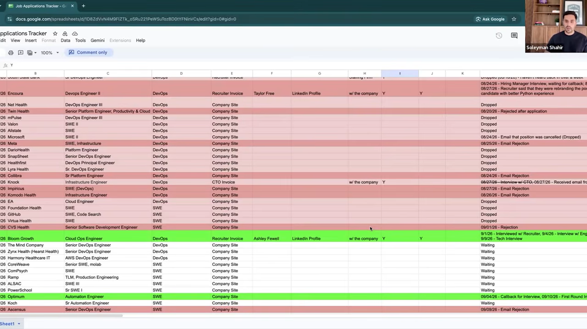
이 수강생은 지원한 회사 직원의 이메일을 찾아 추천이나 소개를 부탁하기도 한대요. 다른 수강생은 '간편 지원' 공고 맨 아래에 '이력서를 이 메일로 보내 달라'는 안내가 있는데 아무도 안 읽는다고 덧붙여요.
최종 면접에서 계속 떨어진다면
면접은 꽤 보는데 최종에서 떨어진다는 수강생에게, 발표자는 먼저 숫자를 물어요. 최종 면접을 몇 번 봤고 어떤 직무였는지요. 기록이 없다고 하자 '데이터가 없으면 패턴도 못 본다'고 해요. 다른 수강생들과 했던 방식은 이래요.
flowchart LR A["지원"] --> B["최종 면접"] B --> C["탈락 피드백 받기
(예: Python 부족)"] C --> D["다음 한 주는
그 약점만 공부"] D --> A
그리고 직무를 좁히래요. 데이터 센터, 클라우드 엔지니어, 클라우드 보안을 동시에 쫓으면 준비가 흩어져요. 최종 면접까지 가장 많이 간 직무 하나에 집중하라는 거예요. 같은 수강생은 면접 전날 면접관들에게 GitHub 프로젝트 다섯 개를 보냈더니 면접이 그 프로젝트 이야기로 흘러갔다고 해요. 발표자는 다른 사람이 아무도 안 하니까 통한다고 짚어요.
발표자가 채용하는 쪽에서 본 화면 이야기도 해요. LinkedIn에 공고를 올렸더니 600명 넘게 지원했는데, LinkedIn의 '적합' 분류에는 0명이 들어 있었대요. 그래서 첫 페이지만 보고 몇 명을 골랐고, 지금 함께 일하는 사람들은 모두 이메일로 먼저 연락해 온 사람이라고 해요.
끝까지 만든 프로젝트 하나
포트폴리오 프로젝트를 몇 개나 이력서에 넣어야 하냐는 질문에는 이렇게 답해요.
One complete project is worth more than 50 uncomplete projects.
끝까지 완성한 프로젝트 하나가 미완성 50개보다 값져요.
— 영상 06:58:22
많은 사람이 반쯤에서 멈춰요. 아키텍처만 그리고 코드는 안 짜거나, 코드는 짰는데 문서가 없거나, GitHub에는 올렸는데 아무에게도 알리지 않아요. 문제를 쪼개고, 설계하고, 코드를 짜고, 문서를 쓰고, 공유하고, 배운 걸 정리하는 데 3~4주를 쓰래요. 그래야 면접에서 왜 이렇게 했는지, 무엇과 무엇을 맞바꿨는지 몇 시간이고 말할 수 있어요.
코드를 외워서 치냐는 질문에는 '복사하지 말고 직접 치라'고 해요. 앞으로는 AI가 짠 코드를 검토하는 일이 늘어나는데, 한 번도 코드를 써 보지 않았으면 검토할 수 없어서예요. 같은 인프라를 CloudFormation, Terraform, TypeScript로 세 번 다시 짜는 이유도 그 반복 때문이에요. 실제 회사에서는 거의 처음부터 짜지 않고 있는 저장소를 클론해서 읽게 된대요.
공고의 숫자에 겁먹지 말기
- '경력 3년': 공고는 희망 목록이라고 해요. 발표자도 모든 칸을 채우는 공고는 없지만 지원한대요. 다른 직업에서 일한 경험도 직장 경험이니, 사회 초년생처럼 생각하지 말라고 해요.
- Kubernetes: 아카데미에서 다루지 않는 이유를 설명해요. 실제 운영 경험 없이 배우기 어렵고, 생각보다 많은 회사가 쓰지 않는다는 게 발표자의 견해예요. 순서는 Linux, Docker, 그다음 Kubernetes라고 해요.
- '주니어'라는 말: 아예 지우래요. 스스로를 낮은 단계에 가두는 말이라서요. 높은 수준을 목표로 하면 낮은 단계의 일은 자연히 따라온다고 해요.
지금 있는 곳에서 시작하기
이미 일하고 있는 조직에 원하는 직무가 있다면 안에서 옮기는 게 훨씬 쉽대요. 공공기관에서 일하는 수강생에게는 상사와 그 부서 엔지니어들에게 'AWS를 공부 중인데 회의를 들어 봐도 될까요'라고 먼저 말하라고 해요. Terraform 지원 업무를 하는 수강생에게도 같은 조언을 해요. 인프라 팀에 가까이 가서 스펀지처럼 배우고, 그 경험을 이력서에 쓰라는 거예요.
주변에 알리는 것도 같은 맥락이에요. 발표자는 열한 달 동안 꾸준히 준비하며 주변에 알린 수강생이 지인 회사의 클라우드 이전 일을 맡게 된 이야기를 해요. 마흔둘에 세 아이를 키우며 자선 단체에서 일하던 다른 수강생은 LinkedIn에 프로젝트를 계속 올리다가 포르투갈의 큰 에너지 회사에 채용됐대요.
그 밖의 질문들
- 여섯 쪽짜리 이력서: 위험 신호예요. 지원하는 직무에 맞는 경험만 남겨서 한 쪽에서 한 쪽 반으로 줄이래요.
- 원하는 분야가 아닌 제안: 당장 수입이 필요하면 받으래요. 일하면서 원하는 쪽으로 다시 옮기면 되고, 원하지 않는 면접도 연습 삼아 보라고 해요.
- 개념을 말로 설명하기 어려움: 이미 아는 것과 연결해 보래요. 네덜란드어를 아는 사람이 영어 단어를 익히듯, 아는 개념에 새 개념을 이어 붙이는 거예요. 마인드맵을 그려 비전공자에게 설명해 보는 것도 권해요.
- 입사 첫 주: 바로 콘솔에 던져지지 않아요. 문서를 읽고, 여러 팀을 만나고, 구조를 머릿속에 그리는 시간이 있대요. 발표자는 한 스타트업에 들어가 콘솔로 만든 인프라를 전부 코드로 옮기는 것부터 했다고 해요.
- 원격 근무: 회사마다 달라요. 발표자는 주 3일 출근 조건으로 들어간 계약에서 신뢰를 쌓은 뒤 두바이에서 일해도 된다는 허락과 더 높은 일당을 받았대요.
- 컨설팅: 영업 경험이 있는 수강생에게는 고객 한두 곳이면 충분하니 지금부터 연락을 시작하래요. 발표자도 준비가 덜 된 상태로 전기차 충전 회사 일을 맡고, 일하면서 방법을 배웠다고 해요.
수업의 마지막 메시지는 결과가 아니라 매일의 입력에 집중하라는 거예요. 달력에 공부 두 시간, 프로젝트 두 시간, 구직 두 시간을 막아 두고 그대로 하라고 해요. 발표자가 매주 영상을 올리던 5년이 지금의 아카데미를 만든 것처럼, 결과는 쌓인 행동 뒤에 온다는 거예요.